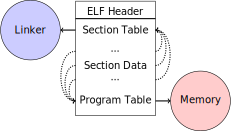
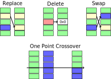
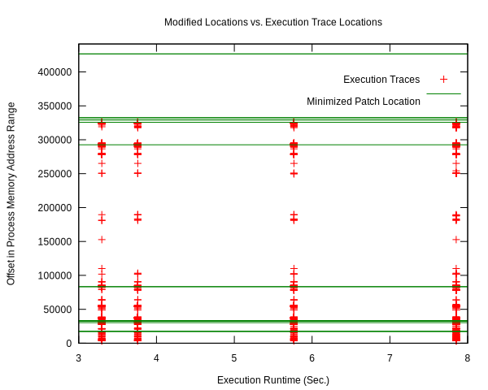

Automated Repair of Exploits in NETGEAR Router Binary
The speed with which researchers and vendors respond to security vulnerabilities is critical, especially after exploits have been discovered. The situation is especially dire for end users who lack product source code and typically must wait for a patch to be released by the vendor. We propose an alternative approach in which newly discovered exploits drive an automated repair technique capable of patching vulnerabilities, even without access to source code or special information from the software vendor.
The repair method uses evolutionary computation to search for patches. Extensions to earlier work include: Repairing security vulnerabilities in router binaries; special processing to handle stripped ELF files; operating without fault localization information; and operating without a pre-existing regression test suite to define required program behavior.
We demonstrate the method by repairing two recently discovered exploits in version 4 of NETGEAR's WNDR3700 wireless router before NETGEAR released patches publicly for the exploits. Without the advantage of regression tests to guide the search, we find that 80% of repairs of the example exploits retain program functionality. When a few user-created tests of required functionality are incorporated in an interactive process, success increases to 100% of the proposed repairs.
1 Introduction
Router bugs are a significant issue, ranging from the bug in CISCO's IOS, which on February 16th caused outages in nearly every country worldwide [45], to security vulnerabilities in home routers like NEGEAR [10] or the recent D-Link bug [11]. Security bugs are particularly problematic, especially because major software vendors commonly delay releasing patches to security exploits. In a study of high and medium risk vulnerabilities in Microsoft and Apple products between 2002 and 2008, for example, about 10% of vulnerabilities were found not to be patched within 150 days of disclosure, and on any given date about 10 vulnerabilities and over 20 vulnerabilities were public and un-patched for Microsoft and Apple respectively [13].
Rather than waiting for vendor-delivered patches, we propose to repair reproducible exploits automatically, even when developer source code and test suites are not available. A user-produced patch could be installed temporarily for internal protection, redistributed with the exploit (reporting an exploit with a patch in hand has been shown to reduce the total number of attacks [1]), or sent to the software vendor to reduce development time for the official patch [41].
In recent years, a variety of automated methods for program repair have successfully repaired defects in real software (e.g., [33,25,21,32]). Automated repair methods based on evolutionary computation (EC) have also repaired defects directly in x86 and ARM ELF files, without access to program source code [36]. This prior work, however, relies on a regression test suite to define the required functionality, or informal specification, of the program under repair. Here we consider a setting in which neither source code nor test suites are available, and there is no special information or cooperation from the vendor.
We demonstrate our technique by patching multiple security vulnerabilities in the popular NETGEAR WNDR3700 wireless router, which at the time of submission NETGEAR has not publicly addressed. Although previous EC-based program repair techniques explicitly require access to a regression test suite, we explore the feasibility of performing repairs without any such test suite and find that for our example exploits, regression test suites are most often not necessary. In addition, we find that the complexity of security vulnerabilities requires iterative applications of repair edits within a single evolutionary run.
The main contributions of this short paper are;
- A novel technique suitable for automatically generating security repairs in routers without access to source code, regression test suites, or fault localization information; and
- An application of the approach to a real-world unpatched security exploit, resulting in
- The first demonstration of multiple iterative repairs in a single run of the evolutionary repair algorithm.
To encourage reproducible research [5,30] and to allow others to patch future exploits, we have published a companion open source repository 1. It contains the instructions, source code, and tooling needed to extract, execute and repair the binary NETGEAR router image vulnerabilities, as well as the data used to generate the analyses and figures reported in this paper.
We hope that this work encourages users to patch important vulnerabilities quickly and researchers to release patches simultaneously with exploit announcements.
The remainder of the paper reviews two recent exploits of NETGEAR WNDR3700 (Section 2); demonstrates % the feasibility of running the NETGEAR firmware in a VM sandbox (Section 3.1); describes the automated program repair technique (Sections 3.2 and 3.3); evaluates effectiveness and quality of repairs (Section 4); summarizes related work (Section 5); and discusses implications and limitations (Section 6).
2 Description of Exploits
We describe two current exploits in version 4 of the NETGEAR WNDR3700
wireless router. The popularity of this router implies that vulnerable
systems are currently widespread. For example, the "shodan" 2
device search engine returned hundreds of vulnerable publicly
accessible WNDR3700 routers at the time of writing. Both exploits
exist in the router's internal web server in a binary executable named
net-cgi, and both are related to how net-cgi handles
authentication [10].
The vendor-deployed binary is insecure in at least two ways:
- Any URI starting with the string "BRS" bypasses authentication.
- Any URI including the substring "
unauth.cgi" or "securityquestions.cgi" bypass authentication. This applies even to requests of the form http://router/page.html?foo=unauth.cgi, meaning that the vulnerability effectively applies to all internal webpages.
Many administrative pages start with the "BRS" string, providing
attackers with access to personal information such as users passwords,
and by accessing the page http://router/BRS_02_genieHelp.html
attackers can disable authentication completely and permanently across
reboots.
3 Automated Repair Method
Our repair technique for this vulnerability consists of three stages:
- Extract the binary executable from the firmware and reproduce the exploit (Section 3.1).
- Use EC to search for repairs by applying random mutations (and crossover) to the stripped (without symbols or section tables) MIPS ELF binary (Section 3.2).
- Construct test cases lazily, as needed, to improve the quality of unsatisfactory candidate repairs (Section 3.3).
The first step in repairing the net-cgi executable is to
extract it and the router file system from the firmware image
distributed by NETGEAR. Using the extracted files ystem and
executable we construct a test harness that can exercise the exploits
in net-cgi. This test harness is used by the repair
algorithm to evaluate candidate repairs and to identify when repairs
to the exploits have been found.
3.1 Firmware Extraction and Virtualization
NETGEAR distributes firmware with a full system image for the WNDR3700
router, which includes the router file system that has the vulnerable
net-cgi executable. The file system was extracted using the
binwalk 3 firmware extraction tool, which scans the binary data
in the raw monolothic firmware file, searching for signatures
identifying embedded data sections, including squashfs
[28] that hold the router's file system.
The router runs on a big-endian MIPS architecture, requiring emulation
on most desktop system to safely reproduce the exploit and evaluate
candidate repairs. We used the QEMU system emulator
[3] to emulate the MIPS architecture in a lightweight
manner with Debian Linux also run in emulation. The extracted router
file system is copied into the emulated MIPS Linux system. A number
of special directories (e.g., /proc/, /dev/ etc.) are mounted
inside the extracted file system and bound to the corresponding
directories on the virtual machine. At this point, commands can be
executed in an environment that closely approximates the execution
environment of the NETGEAR router by using the chroot command to
confine executable access to within the extracted NETGEAR file
system. Additional minor adjustments are described in
http://eschulte.github.io/netgear-repair/INSTRUCTIONS.html.
At this point the NETGEAR router can be run under virtualization. In
particular, the router's web interface can be accessed either using an
external web browser or the net-cgi executable can be called
directly from the command line.
3.2 Automated Program Repair and ELF Files
We use EC methods [12,25,26,14] to search for small changes to existing programs that eliminate undesired buggy behavior. This process typically has access to the source code of the original program, which is first transformed into an abstract syntax tree and then iteratively modified using random mutations and crossovers to generate program variants. Each variant is evaluated in a process called fitness evaluation by running it against the program's existing regression test suite and at least one additional test that demonstrates the undesired behavior.
The repair algorithm constructs a population of 512 program variants, each with one or more random mutations. This population is evolved through an iterated process of evaluation, selection, mutation, and crossover (pseudo-code and Figure 2) until a version of the original program is found that repairs the bug. 'Repair' in this context is defined to mean that it avoids the buggy behavior and does not break required functionality. In earlier versions of the algorithm, execution traces were collected during program execution and used as a form of fault localization to bias random mutations towards the parts of the program most likely to contain the bug. Our decision not to use fault localization is explained in Section 4.2.2.
This basic repair algorithm was modified in several ways to address the unique scenario of a user repairing a faulty binary executable (Section #mutate-mips), without access to a regression test suite (Section 3.3), and without the fault localization optimization.
3.2.1 Challenge: Mutating Stripped Binaries
Executable programs for Unix and embedded system are commonly distributed as ELF (Executable and Linking Format) [7] files. Each ELF file contains a number of headers and tables containing administrative data, and sections holding program code and data. The three main administrative elements of an ELF file are the ELF header, the section table and the program table (see Figure 1). The ELF header points to the section table and the program table, the section table holds information on the layout of sections in the ELF file on disk, and the program table holds information on how to copy sections from disk into memory for program execution.

Figure 1: Sections and their uses in an Executable and Linking Format (ELF) file.
Although the majority of ELF files include all three of the elements shown in Figure 1, only the ELF Header is guaranteed to exist in all cases. In executable ELF files, the program table is also required, and similarly, in linkable files the section table is required.
We extend previous work that repaired unstripped Intel and ARM files
[36]. The ELF file is modfied by the mutation and
crossover operations, but in this case net-cgi does not include key
information on which the earlier work relied, namely the section table
and section name string table. This information was used to locate
the .text section of the ELF file where program code is normally
stored. The data in the .text section were then coerced into a
linear array of assembly instructions (the genome) on which the
mutation operations were defined. Our extension removes this
dependence by concatenating the data of every section in the program
table that has a "loadable" type to produce the genome. These are the
sections whose data are loaded into memory during program execution.
Mutation operations must change program data without corrupting the structure of the file or breaking the many addresses hard coded into the program data itself (e.g., as destinations for conditional jumps). In general, it is impossible to distinguish between an integer literal and an address in program data, so the mutation operations are designed to preserve operand absolute sizes and offsets within the ELF program data. This requirement is easily met because every argumented assembly instruction in the MIPS RISC architecture is one word long [17]. "Single point crossover" is used to recombine two ELF files. An offset in the program data is selected, then bytes from one file are taken up to that offset and bytes from the other file taken after that offset. This form of crossover works especially well because all ELF files will have similar total length and offsets. The mutation and crossover operations used to modify stripped MIPS ELF files are shown in Figure 2.

Figure 2: Mutation and Crossover operations for stripped MIPS ELF files. The program data are represented as a fixed length array of single-word sections. These operators change these sections maintaining length and offset in the array.
3.3 On-Demand Regression Testing
Our approach to program repair relies on the ability to assess the validity of any candidate repair. The mutations are random in the sense that they do not take into account or preserve the semantics of the program. They are more likely to create new bugs or exploits than they are to repair undesired behavior, and the method requires an evaluation scheme to distinguish between these cases.
Instead of relying on a pre-existing regression test suite, we assume only that a demonstration of the exploit provides a single available test. By mutating programs without the safety net of a regression test suite, the evolved "repairs" often introduce significant regressions. However, by applying a strict minimization process after the primary repair is identified, these regressions are usually removed (Section 4.2.3). The minimization reduces the difference between the evolved repair and the original program to as few edits as possible using Delta Debugging [44]. The interactive phase of the repair algorithm asks the user to identify any regressions that remain after the Delta Debugging step. High-level pseudocode for the repair algorithm is show in Figure 1.
Our method is thus an interactive repair process in which the algorithm searches for a patch that passes every available test (starting with only the exploit), and then minimizes it using Delta Debugging. In a third step, the user evaluates its suitability. If the repair is accepted, the process terminates. Otherwise, the user supplies a new regression test that the repair fails (a witness to its unsuitability) and the process repeats. In Section 4 we find that 80% of our attempts to repair the NETGEAR WNDR3700 exploits did not require any user-written regression tests.
The evolutionarySubroutine in Figure 1 is organized
similarly to previous work [25], but it uses a
steady state evolutionary computational algorithm
[29] for reduced memory usage and ease of
parallelization of fitness evaluation. Figure 2
gives the high-level pseudocode.
Note that every time the user rejects the solution returned by
evolutionarySubroutine, the evolved and minimized solution is
discarded and a new population is generated by recopying the original
in evolutionarySubroutine.
4 Repairing the NETGEAR Exploits
We first describe the experimental setup used to test the repair technique on the NETGEAR WNDR3700 exploit (Section 4.1). We then analyze the results of ten repair attempts (Section 4.2).
4.1 Methodology
All repairs were performed on a server-class machine with 32 physical Intel Xeon 2.60GHz cores, Hyper-Threading and 120 GB of Memory. We used a test harness to assess the fitness of each program variant (Section 4.1.1) and report parameters used in the experiments (Section 4.1.2}).
4.1.1 Fitness Evaluation
We used 32 QEMU virtual machines, each running Debian Linux with the
NETGEAR router firmware environment available inside of a chroot.
The repair algorithm uses 32 threads for parallel fitness evaluation.
Each thread is paired with a single QEMU VM on which it tests fitness.
The test framework includes both a host and a guest test script. The
host script runs on the server performing repair and the guest script
runs in a MIPS virtual machine. The host script copies a variant of
the net-cgi executable to the guest VM where the guest test script
executes net-cgi the command line and reports a result of Pass,
Fail, or Error for each test. These values are then used to
calculate the variant's scalar fitness.
Pass indicates that the program completed successfully and produced
the correct result, Fail indicates that the program completed
successfully but produced an incorrect result, and Error indicates
that the program execution did not complete successfully due to early
termination (e.g., because of a segfault) or by a non-zero "errno"
exit value.
4.1.2 Repair Parameters
Repair used the following parameters. The maximum population size was 512 individuals, selection is performed using a tournament size of two 4. When the population overflows the maximum population size, an individual is selected for eviction using tournament selection in reverse. Newly generated individuals undergo crossover two-thirds of the time.
These parameters differ significantly from those used in previous
evolutionary computation (EC) repair algorithms (e.g.,
[12,14,26]). Specifically, we use larger populations
(512 instead of 40 individuals), running for many more fitness
evaluations (≤100,000 instead of ≤400). However, the parameters used
here are in line with those used in other EC publications given the
size of the net-cgi binary, and they help compensate for the lack of
fault localization information.
The increased memory required by the larger population size is offset by the use of a steady-state [29] EC algorithm, and the increased computational demand of the greater number of fitness evaluations is offset by parallelization of fitness evaluation.
4.2 Experimental Results
We report results for the time typically taken to generate a repair (Section 4.2.1), the effect of eliminating fault localization (Section 4.2.2), and the impact of the minimization process (Section 4.2.3), both with respect to the size of the repair in terms of byte difference from the original and in terms of the fitness improvement. Finally we demonstrate how multiple repairs can be discovered iteratively by the repair process (Section 4.2.4).
4.2.1 Repair Runtime

Figure 3: Code modifications occur in different locations from execution traces: The location of every edit in a minimized successful repair is plotted as a horizontal line. Only 2 of the 22 minimized edit locations are within 3 bytes of a sample from any test suite execution. Each vertical column shows points of execution traces from one test suite. Test suites shown from left to right are 3 tests (exploit tests only), 4, 7, and 11 tests (all exploit and author-generated regression tests), with 330, 399, 518, and 596 sampled execution locations respectively.Code modifications occur in different locations from execution traces: The location of every edit in a minimized successful repair is plotted as a horizontal line. Only 2 of the 22 minimized edit locations are within 3 bytes of a sample from any test suite execution. Each vertical column shows points of execution traces from one test suite. Test suites shown from left to right are 3 tests (exploit tests only), 4, 7, and 11 tests (all exploit and author-generated regression tests), with 330, 399, 518, and 596 sampled execution locations respectively.
In 8 of the 10 runs of the algorithm (with random restarts), the three exploit tests alone were sufficient to generate a satisfactory repair (determined using a withheld regression test suite hand-written by the authors 5), and the third phase of user-generated tests was not required.
In these cases the repair process took an average of ~36,000 total fitness evaluations requiring on average 86.6 minutes to find a repair using 32 virtual machines for parallelized fitness evaluation.
4.2.2 Repair without Fault Localization
In the NETGEAR scenario, we do not have a regression test suite available. In addition, however, a regression test suite may sometimes over-constrain the search operators (mutation and crossover) [37], preventing the discovery of valid repairs.
One of the NETGEAR exploits exemplifies this issue. As shown in Figure 3 , fault localization might have prevented the repair process from succeeding. The figure shows that many of the program edit locations for successful repairs were not visited by the execution trace. In fact, only 2 of the 22 program locations modified by successful repairs were within 3 instructions of the execution traces. Although surprising, this result suggests that earlier work, which confines edit operations to execution traces, would likely be unable to repair the NETGEAR bugs.
4.2.3 The impact of Minimization
In some cases the initial suggested repair, known as the primary
repair, was not satisfactory. For example, suggested repairs
sometimes worked when net-cgi was called directly on the command
line but not through the embedded uHTTPd webserver 6, or the
repaired file failed to serve pages not used in the exploit test.
However, Table 1 shows that in most cases the minimized
version of the repair was satisfactory, successfully passing all
hand-written regression tests, even those not used during the repair
process.
| Run | Fit Evals | Full Diff | Min Diff | Full Fit | Min Fit |
|---|---|---|---|---|---|
| 0 | 90405 | 500 | 2 | 8 | 22 |
| 1 | 17231 | 134 | 3 | 22 | 22 |
| 2 | 26879 | 205 | 2 | 21 | 22 |
| 3 | 23764 | 199 | 2 | 19 | 22 |
| 4 | 47906 | 319 | 2 | 6 | 6 |
| 5 | 13102 | 95 | 2 | 16 | 22 |
| 6 | 76960 | 556 | 3 | 17 | 22 |
| 7 | 11831 | 79 | 3 | 20 | 22 |
| 8 | 2846 | 10 | 1 | 14 | 14 |
| 9 | 25600 | 182 | 2 | 21 | 22 |
| mean | 33652.4 | 227.9 | 2.2 | 16.4 | 19.6 |
As shown in Table 1, the initial evolved repair differed from the original at over 200 locations on average in the ELF program data, while the minimized repairs differed at only 1–3 locations on average. This great discrepancy is due to the accumulation of candidate edits in non-tested portions of the program data. Since these portions of the program were not tested, there was no evolutionary pressure to purge the harmful edits. Delta Debugging eliminates these edits.
6 Discussion
The results presented here open up the possibility that end users could repair software exploits in closed source software without special information or aid from the software vendor.
There are several caveats associated with this initial work. First, we demonstrated repair on a single executable, and it is possible that the success in the absence of regression test suite will not generalize. However, our results do not appear to be based on any property unique to the NETGEAR exploits. We conjecture that our success at finding functional repairs in this setting is due to the beneficial impact of minimization and to a property of software known as mutational robustness [38]. Across a wide variety of software, this work found that the functionality of software mutants differs by only about 60% between software tested with an empty regression test suites and software tested with the best obtainable quality regression test suites. A second caveat arises from the fact that the NETGEAR exploit occured in a web interface rather than actual routing routines. Although security vulnerabilities are serious wherever they occur, an important area for future work is to explore repairs of other types of router bugs, importantly concurrency bugs. Finally, we demonstrated the repair running in a virtualized environment and not natively in the router. Although we did not test our repairs on physical NETGEAR WNDR3700 hardware, we are confident that our repairs would have the same effect on hardware as they do in emulation.
Software defined networking (SDN) and dedicated network debuggers [16] point to a future in which network bugs are more easily reproduced and tested. In this case, there will likely be increasing opportunity for techniques like the one presented here to quickly patch important network bugs.
Whenever a patch is distributed there a risk of someone reverse-engineering an exploit from the patch text [4]. As shown in Table 1 our technique sometimes generates patches that are not directly relevant to the repaired exploit. It may be possible to avoid this risk by generating obfuscated patches in cases where a regression test suite is available minimization is not performed.
7 Conclusion
The paper described a method that enables end users to repair networking software without cooperation from the software vendor. We demonstrate the method by repairing two security vulnerabilities in the popular NETGEAR WNDR3700 router, vulnerabilities that currently exist in many actively used devices and have not been addressed by NETGEAR. Our method does not require access to source code or a pre-existing regression test suite.
8 Acknowledgments
We thank Z. Cutlip, who analyzed and announced the NETGEAR exploits and helped us reproduce the exploits locally; M. Harmon, for discussions of automated program repair without a regression test suite; and S. Harding for suggesting the interactive lazy regression repair algorithm. Partial support of this work provided by NSF (SHF-0905236), DARPA (P-1070-113237), and the Santa Fe Institute.
References
| [1] | Ashish Arora, Anand Nandkumar, and Rahul Telang. Does information security attack frequency increase with vulnerability disclosure? an empirical analysis. Information Systems Frontiers, 8(5):350-362, 2006. [ bib ] |
| [2] | Ashish Arora, Rahul Telang, and Hao Xu. Optimal policy for software vulnerability disclosure. Management Science, 54(4):642-656, 2008. [ bib ] |
| [3] | Fabrice Bellard. Qemu, a fast and portable dynamic translator. In USENIX Annual Technical Conference, FREENIX Track, pages 41-46, 2005. [ bib ] |
| [4] | David Brumley, Pongsin Poosankam, Dawn Song, and Jiang Zheng. Automatic patch-based exploit generation is possible: Techniques and implications. In Security and Privacy, 2008. SP 2008. IEEE Symposium on, pages 143-157. IEEE, 2008. [ bib ] |
| [5] | Jonathan B Buckheit and David L Donoho. Wavelab and reproducible research. Springer, 1995. [ bib ] |
| [6] | Brian Cashell, William D Jackson, Mark Jickling, and Baird Webel. The economic impact of cyber-attacks. Congressional Research Service, Library of Congress, 2004. [ bib ] |
| [7] | TIS Committee et al. Tool interface standard (tis) executable and linking format (elf) specification version 1.2. TIS Committee, 1995. [ bib ] |
| [8] | Symantec Corporation. Internet security threat report. Technical report, Symantec Corporation, 2013. [ bib ] |
| [9] | Manuel Costa, Jon Crowcroft, Miguel Castro, Antony Rowstron, Lidong Zhou, Lintao Zhang, and Paul Barham. Vigilante: End-to-end containment of internet worm epidemics. ACM Transactions on Computer Systems (TOCS), 26(4):9, 2008. [ bib ] |
| [10] | Zachary Cutlip. Complete, persistent compromise of netgear wireless routers, October 2013. http://shadow-file.blogspot.com/2013/10/complete-persistent-compromise-of.html. [ bib ] |
| [11] | Dennis Fisher. D-link planning to patch router backdoor bug, October 2013. http://threatpost.com/d-link-planning-to-patch-router-backdoor-bug/102581. [ bib ] |
| [12] | Stephanie Forrest, ThanhVu Nguyen, Westley Weimer, and Claire Le Goues. A genetic programming approach to automated software repair. In Proceedings of the 11th Annual conference on Genetic and evolutionary computation, pages 947-954. ACM, 2009. [ bib ] |
| [13] | Stefan Frei, Bernhard Tellenbach, and Bernhard Plattner. 0-day patch exposing vendors (in) security performance. BlackHat Europe, Amsterdam, NL, 2008. [ bib ] |
| [14] | Claire Le Goues, Michael Dewey-Vogt, Stephanie Forrest, and Westley Weimer. A systematic study of automated program repairs: Fixing 55 out of 105 bugs for $8 each. In Software Engineering, 2012. ICSE 2012. IEEE, 2011. [ bib ] |
| [15] | Andy Greenberg. Oracle quietly releases fix for serious java security bug-months after it was reported, August 2012. http://www.forbes.com/sites/andygreenberg/2012/08/30/oracle-quietly-releases-fix-for-serious-java-security-bug-months-after-it-was-reported/. [ bib ] |
| [16] | Nikhil Handigol, Brandon Heller, Vimalkumar Jeyakumar, David Mazières, and Nick McKeown. Where is the debugger for my software-defined network? In Proceedings of the first workshop on Hot topics in software defined networks, pages 55-60. ACM, 2012. [ bib ] |
| [17] | John Hennessy, Norman Jouppi, Steven Przybylski, Christopher Rowen, Thomas Gross, Forest Baskett, and John Gill. Mips: A microprocessor architecture. ACM SIGMICRO Newsletter, 13(4):17-22, 1982. [ bib ] |
| [18] | John Henry Holland. Adaptation in natural and artificial systems: an introductory analysis with applications to biology, control, and artificial intelligence. The MIT press, 1992. [ bib ] |
| [19] | IEEE security and privacy, special issue on IT monocultures. Vol. 7, No. 1, Jan./Feb. 2009. [ bib ] |
| [20] | Robert O’Harrow Jr. Cyber search engine shodan exposes industrial control systems to new risks, June 2012. http://articles.washingtonpost.com/2012-06-03/news/35459595_1_computer-systems-desktop-computers-search-engine. [ bib ] |
| [21] | Dongsun Kim, Jaechang Nam, Jaewoo Song, and Sunghun Kim. Automatic patch generation learned from human-written patches. In Proceedings of the 2013 International Conference on Software Engineering, pages 802-811. IEEE Press, 2013. [ bib ] |
| [22] | John R. Koza. Genetic programming: On the programming of computers by means of natural selection, 1992. See http://miriad. Iip6. fr/microbes Modeling Adaptive Multi-Agent Systems Inspired by Developmental Biology, 229, 1992. [ bib ] |
| [23] | John R Koza, Martin A Keane, Jessen Yu, Forrest H Bennett III, and William Mydlowec. Automatic creation of human-competitive programs and controllers by means of genetic programming. Genetic Programming and Evolvable Machines, 1(1-2):121-164, 2000. [ bib ] |
| [24] | F. Kühling, K. Wolff, and P. Nordin. A brute-force approac to automatic induction of machine code on cisc architectures. Genetic Programming, pages 288-297, 2002. [ bib ] |
| [25] | Claire Le Goues, ThanhVu Nguyen, Stephanie Forrest, and Westley Weimer. GenProg: A generic method for automated software repair. Transactions on Software Engineering, 38(1):54-72, 2012. [ bib ] |
| [26] | Claire Le Goues, Westley Weimer, and Stephanie Forrest. Representations and operators for improving evolutionary software repair. In Proceedings of the fourteenth international conference on Genetic and evolutionary computation conference, pages 959-966. ACM, 2012. [ bib ] |
| [27] | Robert Lemos. Microsoft details new security plan, October 2003. http://news.cnet.com/Microsoft-details-new-security-plan/2100-1002_3-5088846.html. [ bib ] |
| [28] | P Lougher and R Lougher. Squashfs-a squashed read-only filesystem for linux, 2006. [ bib ] |
| [29] | Sean Luke. Essentials of Metaheuristics. Lulu, second edition, 2013. Available for free at http://cs.gmu.edu/~sean/book/metaheuristics/. [ bib ] |
| [30] | Jill P Mesirov. Accessible reproducible research. Science, 327(5964):415-416, 2010. [ bib ] |
| [31] | Barton P Miller, Louis Fredriksen, and Bryan So. An empirical study of the reliability of unix utilities. Communications of the ACM, 33(12):32-44, 1990. [ bib ] |
| [32] | Hoang Duong Thien Nguyen, Dawei Qi, Abhik Roychoudhury, and Satish Chandra. Semfix: Program repair via semantic analysis. In Proceedings of the 2013 International Conference on Software Engineering, pages 772-781. IEEE Press, 2013. [ bib ] |
| [33] | Jeff H Perkins, Sunghun Kim, Sam Larsen, Saman Amarasinghe, Jonathan Bachrach, Michael Carbin, Carlos Pacheco, Frank Sherwood, Stelios Sidiroglou, Greg Sullivan, et al. Automatically patching errors in deployed software. In Proceedings of the ACM SIGOPS 22nd symposium on Operating systems principles, pages 87-102. ACM, 2009. [ bib ] |
| [34] | R. Poli, W.B. Langdon, and N.F. McPhee. A field guide to genetic programming. Lulu Enterprises Uk Ltd, 2008. [ bib ] |
| [35] | Eric Schulte, Dan Davison, Tom Dye, and Carsten Dominik. A multi-language computing environment for literate programming and reproducible research. Journal of Statistical Software, 46(3), January 2012. [ bib ] |
| [36] | Eric Schulte, Jonathan DiLorenzo, Westley Weimer, and Stephanie Forrest. Automated repair of binary and assembly programs for cooperating embedded devices. In Proceedings of the eighteenth international conference on Architectural Support for Programming Languages and Operating Systems. ACM, 2013. [ bib ] |
| [37] | Eric Schulte, Jonathan Dorn, Stephen Harding, Stephanie Forrest, and Westley Weimer. Post-compiler software optimization for reducing energy. In Proceedings of the nineteenth international conference on Architectural Support for Programming Languages and Operating Systems. ACM, 2014. [ bib ] |
| [38] | Eric Schulte, ZacharyP. Fry, Ethan Fast, Westley Weimer, and Stephanie Forrest. Software mutational robustness. Genetic Programming and Evolvable Machines, pages 1-32, 2013. [ bib ] |
| [39] | Pitchaya Sitthi-Amorn, Nicholas Modly, Westly Weimer, and Jason Lawrence. Genetic programming for shader simplification. ACM Transactions on Graphics (TOG), 30(6):152, 2011. [ bib ] |
| [40] | Yi Wei, Yu Pei, Carlo A. Furia, Lucas S. Silva, Stefan Buchholz, Bertrand Meyer, and Andreas Zeller. Automated fixing of programs with contracts. In International Symposium on Software Testing and Analysis, pages 61-72, 2010. [ bib ] |
| [41] | Westley Weimer. Patches as better bug reports. In Generative Programming and Component Engineering, pages 181-190, 2006. [ bib ] |
| [42] | Westley Weimer, ThanhVu Nguyen, Claire Le Goues, and Stephanie Forrest. Automatically finding patches using genetic programming. In Proceedings of the 31st International Conference on Software Engineering, pages 364-374. IEEE Computer Society, 2009. [ bib ] |
| [43] | Zuoning Yin, Ding Yuan, Yuanyuan Zhou, Shankar Pasupathy, and Lakshmi N. Bairavasundaram. How do fixes become bugs? In Foundations of Software Engineering, pages 26-36, 2011. [ bib ] |
| [44] | Andreas Zeller. Yesterday, my program worked. Today, it does not. Why? In Foundations of Software Engineering, pages 253-267, 1999. [ bib ] |
| [45] | Earl Zmijewski. Reckless driving on the internet, February 2009. http://www.renesys.com/2009/02/the-flap-heard-around-the-world/. [ bib ] |
Footnotes:
When the fitness of all variants in the population has been evaluated, the fitness values are used to select one individual for subsequent modifications in the next generation. We use tournament selection where each tournament chooses a subset of two (the tournament size) randomly from the population and the individual with higher fitness wins the tournament and is copied into the population.